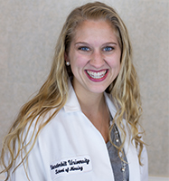

Our Providers
{kind=link}

Barbara Aquino, MD
Barbara A. Aquino, M.D., FAAP is a board certified pediatrician by the American Academy of Pediatrics and is the owner of Aquino Pediatrics. She began practicing in Clarksville, TN in August of 1996 for Alpha Medical Associates. Alpha Medical Associates was a PCP group practice that saw patients from newborn to 100 years old. Alpha Medical then became strictly a pediatric clinic seeing children under 18 years old. She began her own practice and moved to 311 Landrum Place in January 2002. She was located there for 9 ½ years until her recent move in July of 2010. For 2 years she planned and built her current building at 881 Professional Park Drive where she thrives on giving the best quality of care to her patients.
Dr. Aquino received her Bachelor of Science in 1974 from The University of Santo Tomas. Dr. Aquino received her medical degree from The University of Santo Tomas, Manila, Philippines. She completed her residency in pediatrics at Brookdale University Hospital Medical Center in Brooklyn, New York. She is board certified by the American Board of Pediatrics since 1996 and she is a fellow of the American Academy of Pediatrics. She is licensed to practice in Tennessee and is currently taking new patients. She is current on her Continuing Medical Education seminars. Dr. Aquino has active staff hospital privileges at Gateway Medical Center and Vanderbilt Children’s Hospital. She has been practicing pediatric medicine since 1996.
She has special interests in adolescent medicine. She promotes good health to her patients and keeping children current on their vaccines. She feels that any opportunity may be a good chance to immunize her patients.
Rachel Levy-Olomucki, MD, FAAP
{kind=link}
Rachel Levy-Olomucki, MD, FAAP is a board certified pediatrician by the American Academy of Pediatrics and joined our provider team in January 2018. Dr. Levy began practicing in the Clarksville area in 2007 where she worked at Blanchfield Army Community Hospital. In 2013, she joined a Clarksville-based pediatric practice where she worked until 2017. Dr. Levy graduated from The Hebrew University – Hadassah Medical School in Jerusalem, Israel in 1992. After completing her residency training in Pediatrics in Morristown Memorial Hospital in New Jersey in 1996, she went on to do her fellowship training in Pediatric Endocrinology in Children’s Mercy Hospital in Kansas City, MO. Then she returned to Israel and worked for 5 years as a pediatrician. In 2004 she returned to Children’s Mercy Hospital and did two more years of training in Pediatric Nephrology.
She is a current member of the American Academy of Pediatrics and the Cumberland Pediatric Foundation.
Sarah Paski, CPNP, MSN
{kind=link}
Sarah Paski , CPNP, MSN is a board certified pediatric nurse practitioner that joined our practice in June 2017.
She worked previously as a nurse practitioner in Lawrenceburg, TN.
Sarah graduated from Wheaton College, IL in 2014 with a Bachelor of Science in Biology. While at Wheaton, she spent two months in Ghana with medical missions and church planting ministry. She received her Master’s in Nursing from Vanderbilt University in 2016. She is board certified by the Pediatric Nursing Certification Board as a Certified Pediatric Primary Care Nurse Practitioner. Sarah has a special interest in rural health, nutrition, and keeping up to date with vaccinations.
Sarah grew up in Charlotte, NC and has moved up to Clarksville to be closer to her fiancé (now husband) who is active duty military. She enjoys involvement in church ministry, keeping up with friends met on mission trips, and putting her library card to good work. She loves working with families to partner in health and wellness, providing comprehensive care to children using the best resources available. She looks forward to meeting new faces and partnering with parents to listen and learn together for how to improve each child’s health and wellness with individualized plans of care.
Hannah Wachtmeister, DNP, RN, MSN, CPNP-BC
Hannah Wachtmeister, DNP, RN, MSN, CPNP-BC, is a board certified nurse practitioner who joined our practice in March 2016. Prior to coming to our practice, she worked for a Nashville-based pediatric practice.
Hannah received her Bachelor of Science from Elon University in North Carolina in 2012. She then attended Vanderbilt University for her Master of Science in Nursing Degree (2014) and completed her Doctor of Nursing Practice degree in December 2016 from Vanderbilt University. She is board certified by the Pediatric Nursing Certification Board. Hannah enjoys spending time with all of her patients but especially enjoys asking all of the kids their “favorites” and “what they want to be when they grow up”.
Hannah is originally from the Boston area but has made Tennessee her home. She currently serves as the president of the Elon Alumni group in Nashville and stays active with other volunteer events. She lives in Nashville with her adorable golden doodle Beau, 2 cats and 3 fish. She recently married in October 2017. In her spare time, she likes to run, bake, garden and hike!
Tiara Wright, CPNP
Tiara Wright, CPNP, is a Certified Pediatric Nurse Practitioner in the state of Tennessee. She graduated from the University of Tennessee, Knoxville in 2014, earning her Masters of Science in Nursing while working at the University of Tennessee Medical Center as a Cardio-thoracic Registered Nurse.
Since before entering the profession, she has always held a strong desire to form bonds with her patients and their families from infancy to adulthood. Her father, a Licensed Practical Nurse who served in Iraq with the United States Armed Forces, told Tiara stories of his experiences helping others that inspire her daily in the health care profession.
Tiara is now excited to return to her home town of Clarksville, TN. She currently lives there with her husband and her hobbies include spending time outdoors, hiking in Tennessee waterfalls, reading, and traveling to new places.
Siddhida Acharya, CPNP-BC
Siddhida Acharya, CPNP-BC, is a board certified nurse practitioner who joined our practice in September 2017. Prior to coming to our practice, she worked for a Maryland-based pediatric practice.
Ms. Sid received her Bachelor of Arts degree in Environmental Studies from Knox College in Illinois in 2005 and later received her Master’s from Clark University in Massachusetts.. She changed career paths and attended Vanderbilt University for her Master of Science in Nursing Degree and graduated in 2016. She is board certified by the Pediatric Nursing Certification Board. Sid enjoys getting to know the patients of the practice and hopes to build long lasting relationships.
Ms. Sid is originally from Nepal but has made Tennessee her home. She lives in Nashville with her husband. In her spare time, she likes to run with her dogs, hike and cook for family and friends. Her special interests are caring for patients with special needs and obesity.
{kind=link}
{kind=link}
{kind=link}